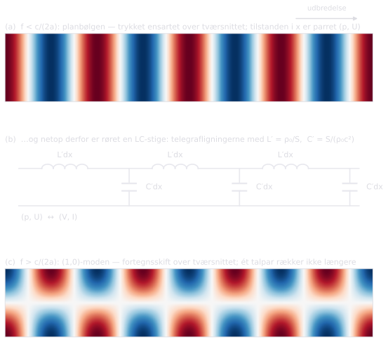
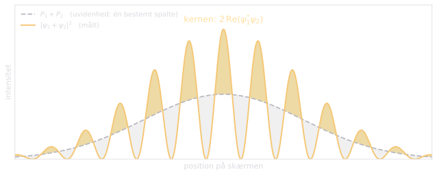

There are two quite different ways in which a question can be badly built, and each needs its own cure. The first is famous and has a name. The second is at least as common, does at least as much harm and is — as far as I can discover — without a name. This essay puts them side by side and then sets the pair to work on the most difficult subject there is.
PART ONE: TWO WAYS OF POSING A QUESTION ASKEW
The mislabelled box
A visitor is shown round Oxford: the colleges, the libraries and the laboratories, the playing fields, the departments. Finally she asks: »But where is the university itself?« She has taken »the university« to be yet another institution of the same kind as the colleges — a further building somewhere in among them — whereas in reality it is simply the way in which everything she has already seen is organised. Her question is not hard to answer. It is malformed.
Gilbert Ryle told this story in The Concept of Mind (1949) to capture an idea whose ancestry goes back through Russell's theory of types to Aristotle's Categories. A category mistake arises when something belonging to one logical type is treated as if it belonged to another. The result is sentences that are grammatically unimpeachable, but meaningless rather than false: »the number seven is green«, »Wednesday is in bed«, »the theory of relativity is blue«. Each of them puts a predicate on a subject of the wrong type, and the predicate finds nothing to grip.
Ryle's own quarry was Cartesian dualism, which he dubbed »the ghost in the machine«: Descartes had admittedly seen correctly that the mind is not the body, but concluded from this that it must be another thing of the same general type — a substance, a mechanism — only immaterial. The diagnosis proved fruitful far beyond that. Hume's gap between is and ought treats fact and value as separate categories that no argument can tacitly bridge. What Bennett and Hacker call the mereological fallacy in neuroscience ascribes to the brain predicates that make sense only of the whole living human being: a brain does not decide, see or believe; a human being does, by means of their brain.
Physics supplies unusually clear specimens. What is the temperature of a single molecule? Temperature is a statistical property of an ensemble, not of one particle; the question confuses system and constituent. Is a lone water molecule wet? The same mistake. What lies north of the North Pole? The grammar is flawless, but »north of« simply ceases to apply there — which is the very form of Hawking's answer to »what happened before the Big Bang?« And Augustine, asked what God was doing before he created the world, answered that time itself is part of creation, so there is no »before« for the deed to fill: the question smuggles the temporal container into the very thing that was supposed to ground it.
The right response to a category mistake is not to toil towards a solution, but to notice that the box was wrongly labelled — to dissolve the problem rather than solve it.
Similar is not congruent
Now to the second mistake, which is the more insidious, because nothing is obviously out of place. Geometry, as every schoolchild meets it, supplies both the name and the distinction. Two triangles are similar when all the angles agree and all the ratios of the sides are preserved. The whole structure recurs: every theorem about angles and ratios that holds for one also holds for the other. And yet they are not the same triangle. They are congruent only when in addition they are the same size, so that one laid on top of the other covers it completely.
Similarity preserves the structure; congruence claims coincidence. A congruence mistake is then to take the first for the second: to treat a genuine structural likeness — an analogy — as if it were an identity. The category mistake says the box is wrongly labelled. The congruence mistake says the box is right, but that one has assumed the contents match term by term.

The mistake has a mirror image which is at least as important: to underestimate a likeness, to dismiss an actual identity as »just an analogy«. The history of science has been delayed by both ditches.
I must be honest about what is new here and what is not. The name seems unused, but the idea is old. The classic informal fallacy of faulty analogy is precisely the assumption that because two things resemble each other in some respects, they must resemble each other in others; the older textbooks formulate it almost as above — analogy is good for comparison, but becomes illegitimate when used to imply identity of nature. Even closer lies Mary Hesse, whose Models and Analogies in Science (1963) divides analogy into positive (what model and object share), negative (where they do not agree) and neutral (the untested remainder, from which the predictive power comes). Her negative analogy is almost exactly what I call the kernel below — and her neutral analogy marks a category we lack: that which has not yet been sorted to either side.
What the geometric name adds is not a discovery but a discipline: it can be learnt in thirty seconds, it places the mistake on one scale together with the category mistake, and — as we shall see — it makes room for the case the fallacy literature never treats, where the map is not deficient at all, but exact within a stated domain.
III. Classroom analogies and their kernels
We live by analogies in teaching, and we must go on doing so: they are not a necessary evil, but the very way understanding is moved from one mind to another. The art is to give the analogy and its limit in the same breath.
Take the water model of the electric circuit: the pump as voltage source, the pressure difference as potential difference, the flow as current, the constriction as resistance. It carries a long way — series and parallel, Ohm's law as proportionality between driving difference and current, even the capacitor as an elastic membrane in the pipe, which blocks direct current but lets alternating current pass. But it has a kernel of things it loses. The electrons are not used up along the way, as pupils otherwise easily conclude. The energy is not transported inside the wire, as water is carried inside a pipe, but in the field around it. And if you cut the wire, nothing gushes out — the current stops everywhere at once. None of this makes the model bad. It makes it a map with a domain of validity.
Or the solar-system atom. The likeness is genuine and was fruitful: the same central force with the same 1/r² form, and it was precisely that likeness that let Rutherford calculate his scattering. But a congruent solar system would radiate — an accelerated charge emits energy — and the electron would spiral into the nucleus in about 10⁻¹¹ s. Quantisation sets in exactly where the congruence ends. The lesson for the pupils is not »the model is wrong«, but »the map has a domain« — and a good habit is to ask them to name one thing the model gets exactly right, and one thing it must not be used for.
The exact case: sound in a straight pipe
That an analogy can be exact within its domain is shown with unusual clarity by my own old field, sound propagation in pipes.
Consider a rigid pipe, and keep the frequency below the cut-off frequency of the first transverse mode — for a rectangular cross-section of width a it lies at f = c/(2a). Below this limit no transverse wave can propagate; they are all evanescent and die away over a distance of the order of the pipe's own size. The pressure is therefore uniform over each cross-section, and the whole acoustic state at the position x is given by just two numbers: the pressure p and the volume velocity U. That is exactly the same state space as the transmission line's, (V, I) — and this is where the congruence begins. Not in a loose likeness, but in the states corresponding one to one.
Physics then supplies the two laws, and it is worth writing out the reasoning rather than quoting the result. Consider a thin slice of gas with cross-sectional area S and thickness dx. Its mass is ρ₀S dx, and the resultant force on it is the pressure difference across its faces, −(∂p/∂x)S dx. Its acceleration is that of the particle velocity, and since U = Sv, Newton's second law reads
where ρ₀/S plays exactly the role of series inductance per unit length, L′ — the inertia of the gas. The second law is conservation of mass with compressibility: any excess of inflow over outflow, −(∂U/∂x) dx, must be stored by compressing the gas in the slice, and for an adiabatic compression the pressure rise follows as dp = ρ₀c² × (relative change in volume). Thus
with S/(ρ₀c²) as shunt capacitance per unit length, C′ — the springiness of the gas. These are the telegrapher's equations, term by term.
And the congruence pays its own bill. The propagation speed becomes 1/√(L′C′) = c, and the characteristic impedance Z₀ = √(L′/C′) = ρ₀c/S — both the right acoustic quantities, delivered by the electrical formalism. Below the cut-off frequency the pipe does not resemble a transmission line; it is one, exactly.
Above the cut-off frequency the map does not get gradually worse — the state space outgrows it. The mathematics behind the limit is the dispersion relation for the (n,0) mode,
which makes the axial wavenumber k imaginary for f < nc/(2a). The mode then decays as e^(−|k|x) over a distance of the order of the pipe's own size — the whole secret of why the plane-wave picture is exact down there. Above that frequency k is real, higher modes propagate, the pressure acquires structure across the cross-section, and no single pair of numbers describes the field; one needs one line per mode.
And even below the limit the model reveals its own kernel in the most beautiful way. At a junction or an open end the evanescent higher modes are nevertheless excited locally, and the plane-wave model books them as a lumped end correction. That is the mature form of analogy: not »this resembles that«, but »this is that, within these limits — and here is the term that covers the rest«. Anyone who builds wind instruments uses that bookkeeping every day.

History's two ditches
The classic of overestimation is caloric. Heat really does flow like a fluid — Fourier's law of heat conduction stands untouched to this day, precisely because it was built only on the likeness in flow and never on the claim of a substance. But caloric took the likeness one step further: heat as a conserved substance. Rumford's cannon borings in 1798 punctured the claim — heat could be produced without limit as long as the horses went round, and a conserved substance cannot be created indefinitely. The similarity was genuine; the congruence was false.
The master of controlled analogy was Maxwell. He made it a declared method — the physical analogy, the partial likeness between the laws of two sciences that lets one throw light on the other — and rode the fluid picture of the field lines all the way to the equations, after which he dismounted before the likeness was turned into identity.
But the opposite ditch is just as real and has cost science at least as much: to dismiss an identity as merely an analogy. Vitalism insisted that organic chemistry only resembled inorganic, until Wöhler in 1828 made urea from ammonium cyanate. Joule showed that »heat is like motion« should be read without the »like«. And Shannon's entropy, −Σ p log p, wore the same face as Boltzmann's; Jaynes argued that it was the same quantity, and Landauer gave the claim physical teeth — erasing one bit costs at least kT ln 2 in heat — with which Bennett could finally lay Maxwell's demon to rest, for the demon's memory must be erased, and the erasure pays the entropy bill. The bridge from »information« to »thermodynamics« was not a metaphor. It was congruent.
The yardstick of mathematics
Mathematics owns the whole scale and has surveyed it. A structure-preserving map that loses nothing is called an isomorphism; one that loses something, a homomorphism — and what it loses is measured precisely by its kernel. In slogan form: every analogy is a homomorphism, and the congruence mistake is to forget that it has a kernel. Even the word is at home there — pupils meet it not only in triangles, but in number theory as congruence modulo n: an equivalence compatible with the structure. The concept arrives with its papers in order.
The kinship
It is worth pausing to see the two mistakes together, for they are not merely neighbours, but extremes on one and the same scale — the scale of how much structure a map preserves. At one extreme nothing is preserved: the predicate finds no purchase at all. That is the homeland of the category mistake; the box is wrongly labelled, and there is no map to discuss. At the other everything is preserved within a stated domain: the pipe below the cut-off frequency, where the states correspond one to one. Between them lies the broad land of analogies, the genuine homomorphisms with genuine kernels. The category mistake is in that sense the limiting case of the congruence mistake: the map whose kernel is the whole.
It follows that the two each require their own treatment, and that the art lies in the diagnosis. A category mistake must be dissolved: the question is withdrawn, and there is nothing more to do. A congruence mistake must be surveyed: the map is genuine, and the task is to find the boundary of the domain and the kernel. The quick test is this: is there any structural likeness to point to at all? If not, you are in the land of the category mistake, and the therapy is to give up the question. If so, the question is not whether, but how far — and then the surveying must begin.
The two can even breed each other. An analogy pressed beyond its domain produces category mistakes on a conveyor belt: take the solar-system atom congruently, and questions like »what season is it on the electron?« are close at hand — grammatically unimpeachable, physically meaningless. Many of the wrongly posed questions of part one are in reality children of an exaggerated congruence. Conversely, a too hasty category diagnosis can hide a genuine identity: to dismiss Shannon's entropy as something categorially different from Boltzmann's — information, after all, does not belong in physics — was to brand a congruence as a category mistake, until Landauer showed that information is physics.
PART TWO: PHYSICS
Schrödingers kat
The double vision pays off on the most famous riddle of all. One is tempted to dismiss Schrödinger's cat with the gesture of the category mistake: to demand a classical either-or of a superposition is to put the wrong kind of question to that kind of state. There is something in that. But the most seductive misreading is at bottom a congruence mistake: to take the wave function for »just« a probability distribution over definite states — the cat is one of the two, we merely do not know which. The likeness is genuine enough: ψ resembles a distribution, and its square delivers probabilities.
But the map has a kernel, and the kernel is the interference terms. The calculation is one step long:
and the last term — physically real cross terms, which no distribution of ignorance possesses, and which experiments can bring out — is exactly what the ignorance reading loses.

The PBR theorem (Pusey–Barrett–Rudolph, 2012) can be read as the declaration of domain for that map: granting only that independently prepared systems have independent physical states, the quantum state cannot be mere knowledge about an underlying reality that different states could share. The measurement problem remains — how, or whether, definite outcomes arise at all is a real and unsolved question, and no neat distinction dissolves it. But with both mistakes in place one can at least say precisely why the easy ways out will not do: one asks the wrong question, the other takes a likeness for an identity.
One electron at a time
Send the electrons off as rarely as you like: one a second, if you insist. Each arrives as a single whole point on the screen, and the pattern is nowhere in the individual impacts — only in the statistics, where the fringes slowly emerge, dot by dot. In Tonomura's classic version the average distance between two electrons in flight was about a hundred kilometres, in an apparatus of just over a metre; no electron has ever »met« another. The fringe spacing is Δx = λL/d, with λ the de Broglie wavelength, d the slit separation and L the distance to the screen.

Now separate two questions which the same apparatus answers quite differently. Against the hypothesis of classical ignorance — that each electron really goes through one particular slit — the pattern is a razor-sharp, informative test: the ignorance distribution P₁+P₂ has no fringes, and it falls. But against the question »which interpretation of quantum mechanics is the right one?« exactly the same pattern is uninformative: Copenhagen, Bohm, GRW and Everett all predict it, fringe for fringe. To take the fringes as »proof« of the multiverse is therefore to press the same button again and again; an experiment cannot distinguish between hypotheses that all predict the same outcome.
Psychology has a name for the underlying mistake, and it deserves a place in all teaching of experimental method: congruence bias, demonstrated by Peter Wason and named by Jonathan Baron and his colleagues. The mistake lies in the very choice of test — testing one's favoured hypothesis directly again and again instead of choosing the experiment that could separate it from its rivals. Ask, before the experiment is run, what each rival predicts; if they predict the same, the test is wasted, however it turns out.
PART THREE: WHAT WE SAY ABOUT GOD
God is not a being
Here the two mistakes do their heaviest work, and the first is the oldest appeal.
The central claim of classical theism — in Thomas Aquinas, and in our own time in writers such as Herbert McCabe, Brian Davies and David Bentley Hart — is that God is not a being: not one entry in the inventory of existing things, however great and powerful it might be. God is not the largest object in or behind the universe, but ipsum esse subsistens, the pure act of being itself, the reason there is anything at all rather than nothing. God is not a thing in the world; God is the reason there is a world.
If that is right, a great deal of the argument on both sides rests on a shared category mistake. The believer who imagines God as an invisible man above the clouds, and the atheist who triumphantly refutes this picture, often disagree about the same object — a very large, very powerful thing placed within reality — which classical theology never proposed. »What caused God?« only bites if God is himself a created sort of thing within the chain of causes, which is precisely what the doctrine denies. Russell's famous teapot compares God with an object in the world, whereas what is meant is that which sustains there being a world to have objects in.
The same lens clears up the standing dispute between science and faith. To treat a scientific and a theological explanation as rival answers to the same question is as a rule a category mistake. The physics of heat transfer and »I fancied a cup of tea« both explain why the kettle is boiling, but they belong to different orders of explanation, not to one and the same contest. When Laplace, so the story goes, told Napoleon that he had no need of that hypothesis, on the classical understanding he was perfectly right: God was never a term in the equations of celestial mechanics. To say that physics has made God superfluous is like saying that grammar has made Shakespeare superfluous.
And the mistake cuts both ways. The »God of the gaps« — inserted as yet another efficient cause to close a gap physics has not yet filled — makes exactly the same confusion in reverse. Georges Lemaître, the priest and physicist who first proposed what became the Big Bang, saw this precisely and warned against turning his cosmology into a proof of creation: the physical beginning of the universe and its metaphysical dependence on God are quite simply different questions.
Analogy: the oldest declaration of domain
The second mistake is more refined, and here theology has trained longest and most systematically.
The classical doctrine insists that our language about God is analogical, not univocal. To say »God is good« is to claim a real likeness — but not that the word means exactly the same of God as of a human being, only in a larger format; that would put God and creature in the same common genus. The Fourth Lateran Council in 1215 wrote the limit into the doctrine itself: however great a likeness may be pointed out between the Creator and the creature, an even greater unlikeness must be noted. It is a formal declaration of an analogy's domain, seven centuries before Ryle, and I know of none older.
Duns Scotus pulled in the opposite direction and defended univocity, but for a reason every logician must respect: without a thin common core — the very concept of »being« — no inference about God gets started at all. The dispute between him and Thomas is, translated into this essay's language, a dispute about where the congruence ends; that both considered precisely that question decisive is the whole point.
With that lens several present-day debates become clearer. If »the hand of God« and »God repented« are read congruently — as if God were a being with limbs and moods — they are plain mistakes, and the critique of religion has an easy time. Read as images they bear weight. Remarkably, the literalist and the polemical atheist often make the same mistake with opposite sign: both read congruently, one to defend the text, the other to bring it down. And if the images are pressed past their domain, they breed category mistakes: »what was God doing before he created the world?« is the child of a congruent reading of creation as an act in time.
The crucifix and the riddles of omnipotence
Now to the point where this whole apparatus earns its keep, and it is not an abstract one.
For those who land in philosophical difficulties about God's omnipotence, the best advice is to stop and look at a crucifix.
The familiar riddles — could God make a stone he cannot lift? can omnipotence be reconciled with omniscience, or with goodness, in a world like this one? — all tacitly presuppose that divine power is created power magnified: coercive force, power exercised over something, scaled up without limit. Read that way, the crucifix is the refutation of omnipotence: here is God at his most powerless, executed by an imperial administration on a charge of sedition.
Read as the tradition reads it, the crucifix does not refute the word but reveals what it meant. A power that can empty itself without ceasing to be power is not power of our kind at all; it is not our kind multiplied, but another kind, of which ours is the faint image. Paul got there before the philosophers and said it more sharply than any of them: the weakness of God is stronger than men (1 Cor 1:25) — and having seen it, he decided to know nothing among the Corinthians except Jesus Christ, and him crucified (1 Cor 2:2).
This is exactly a correction of a congruence mistake, and it is worth noting why it is a better answer than an abstract appeal to analogy. The appeal to analogy tells the opponent that »powerful« is not used univocally. The crucifix shows it. And what it shows is the hymn Paul quotes to the Philippians, which is this argument in poetry: he, who was in the form of God, did not count equality with God a thing to be grasped, but emptied himself and took the form of a servant — and therefore God has highly exalted him (Phil 2:5–11). The self-emptying is not a cancellation of divine power; it is its revelation.
Revelation: I AM
Reason can take us far, and it is no small distance. With reason alone one can come to the knowledge that God is: that behind all that exists there is a ground, being itself. But more is required. To know not merely that God is, but who he is — so that there can be a meeting and not merely an inference — God himself must speak. Christianity's claim is that he has done so.
The name given when Moses asks is astonishing, for it is precisely what the philosophers were groping for: I am who I am — say to the people of Israel: I AM has sent me to you (Exod 3:14). Not a being among beings, not a thing with a name, as other things have names, but being itself. What Thomas Aquinas called ipsum esse subsistens is already here, said by God of himself. The metaphysical insight and the revealed name are one and the same.
And then the decisive point. God did not reveal himself in a book, not in a political or philosophical manifesto, but directly and personally. He stepped into his own creation — into time and space, into the history of humanity — as one of us, in the man Jesus. When Jesus took the same divine name on his own lips, his listeners understood him perfectly well: before Abraham was, I am (John 8:58). It was no pious figure of speech. It was the claim to be the one who spoke to Moses from the burning bush, and they took up stones.
The inner life and the kernel of the image
Revelation shows more than that God is; it shows something of God's inner life. The tradition has long expressed this through what is called the psychological analogy: Augustine developed it through the fifteen books of De Trinitate, and Aquinas gave it its technical form — procession by way of the intellect, which is the Word, the Son; and procession by way of the will or of love, which is the Spirit. God's self-knowledge, and the love between the knower and the known.
It is a magnificent image, and it is here that this essay's discipline must be turned on my own tradition rather than on its critics. Augustine spent fifteen books building these images and then insisted that they remained images. Read congruently — as if the Son really were a thought and the Spirit really a feeling within one divine mind — the analogy delivers modalism: three aspects of one person instead of three persons. That is no small oversight; it is one of the great early heresies, and it arrives precisely by taking a genuine likeness for an exact coincidence. Imago, not congruentia. The kernel of the psychological analogy is precisely what it was shaped to protect.
Filioque: a schism in the kernel
Which brings us to what is perhaps the purest congruence mistake in the history of doctrine — and a place where the Church's own documents now say so in almost these words.
The Niceno-Constantinopolitan Creed of 381 confesses the Spirit as proceeding from the Father. The Latin West came to say and from the Son — Filioque — and the phrase stands among the causes of the estrangement between East and West that has lasted a millennium.
It is tempting for a Western Christian to say that the Eastern tradition in reality supports the Filioque. That claim is too strong and would be challenged at once. The classical Eastern position — Photios, and in our time Lossky — is that the Spirit proceeds from the Father alone, precisely to preserve the monarchy of the Father as the sole source; and to that comes an independent and quite reasonable objection to unilaterally altering an ecumenical creed.
What can be defended is more interesting than what is usually claimed. The Greek verb behind the creed is ekporeuesthai, and the noun ekporeusis — which in Cappadocian usage denotes precisely the relation of origin to the Father alone, as the principle without principle of the Trinity. The Latin processio is a broader word: any going forth, the communication of the consubstantial divinity. Because the Vulgate had already rendered John 15:26 — para tou Patros ekporeuetai — as qui a Patre procedit, the two words were laid on top of each other as equivalents. In the seventh century Maximus the Confessor, writing from Rome, explained to his Eastern correspondent that the Latins did not make the Son the cause of the Spirit: the Father alone is aitia, the sole Cause, and the Filioque concerns the Spirit's proienai in the consubstantial communion of the Father and the Son, not its ekporeusis (Letter to Marinus, PG 91, 136 A-B).
In 1995 the Pontifical Council for Promoting Christian Unity issued a clarification, The Greek and Latin Traditions regarding the Procession of the Holy Spirit, which formulates the matter in a language any surveyor of analogies will recognise at once: through that translation, it says, a false equivalence was involuntarily created between the ekporeusis of Eastern theology and the processio of Latin theology.
A false equivalence, involuntarily created. That is a congruence mistake described in the Church's own words: two expressions with a real overlap of meaning, laid on top of each other as if they were the same expression, with the difference — the kernel — invisible to both parties. And in that kernel sat a schism. One need not think that the whole dispute can be reduced to a mistranslation to see that much of it was, and that neither side could see the kernel, because each read its own word into the other's confession.
I put this forward as the strongest available argument for this essay's thesis. If a difference of domain between two words can divide Christendom for a thousand years, the discipline of asking how far a likeness reaches is not pedantry. It is peace work.
An example: Sir Anthony Kenny
A recent obituary supplies an example of how easily the whole subject is flattened. Sir Anthony Kenny, who died on 3 August 2026, was among the finest philosophers of his generation: a Catholic priest who left the priesthood in 1963, and then author of The Five Ways (1969) and The God of the Philosophers (1979), in which he argued that Aquinas’ proofs do not hold, and that the concept of an omnipotent, omniscient and good God is incoherent. The obituary's frame was a brilliant but doubting mind, led away from the Church and into the academic world.
The facts reported tell a more complex story. Kenny never left Aquinas: together with Peter Geach he helped found analytical Thomism, the movement that presents Aquinas in the language of modern analytic philosophy; he counted Aquinas among the twelve greatest thinkers of the Western world; he went on going to Mass; and in 2006 he received the Aquinas Medal from The American Catholic Philosophical Association. He was not an atheist and took pains to say why: since the word »God« can be defined in many ways, the atheist's claim that none of them can be satisfied is a far stronger claim than anything the theist asserts. That is a man who refuses to pretend a question was closed.
Two things should be said about the neater version. The first is a purely logical point: that an argument fails does not refute its conclusion. Aquinas never built faith on the five ways, and the ways do not end by adding an entry to the inventory of existing things; they end by pointing.
The second is our second mistake. The alleged incoherence between omnipotence, omniscience and goodness follows only on a univocal reading — one in which »knows«, »can« and »good« mean exactly the same of God as of us, only magnified. Kenny knew this perfectly well and contested the doctrine of analogy with great acuteness; he should not be accused of a beginner's mistake. But the summary has no right to report the verdict as if the question had never been raised. And the crucifix answers, as we have seen, the term of omnipotence in a way no summary can: not by argument, but by showing what the word meant.
Knowing which of the two it is
A single moral runs through all this, and it is slightly self-implicating. Our most satisfying intellectual moves are dismissals — »it's just a category mistake«, »it's only information«, »it's merely an analogy« — and it is precisely their satisfying character that makes them dangerous. Each of them is a genuine tool. The category diagnosis really does clear away the ghost in the machine, the God of the gaps, the temperature of the single molecule. The surveying of a congruence really does earn its keep in the pipe, in the classroom, at the double slit and — as the Filioque shows — in the history of doctrine. But both gestures, carried one step too far, wave away problems that are hard rather than confused. The measurement problem is the standing example: the most tempting of all to dismiss as loose talk, and precisely the one that can least be dismissed.
So: two questions, one discipline. Does the predicate grip at all — is the box labelled correctly? And how far does it grip — where does the congruence end? The engineer's formulation is the best I know: over what range does the map hold, and what limits it?
What a pipe's cut-off frequency, Maxwell's method and a medieval council have in common is that each is a declaration of where a likeness ends. It is perhaps the most underrated kind of statement there is — and in the one case where the likeness does not end, where the coincidence is exact and the kernel empty, we do not say analogy at all. We say: I AM.